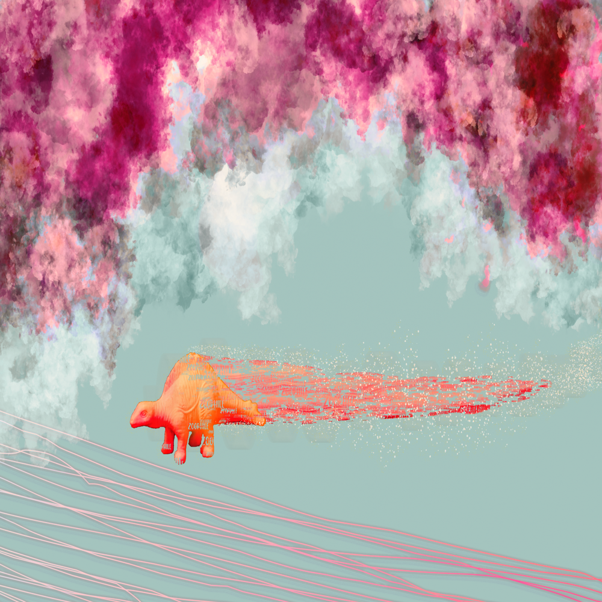
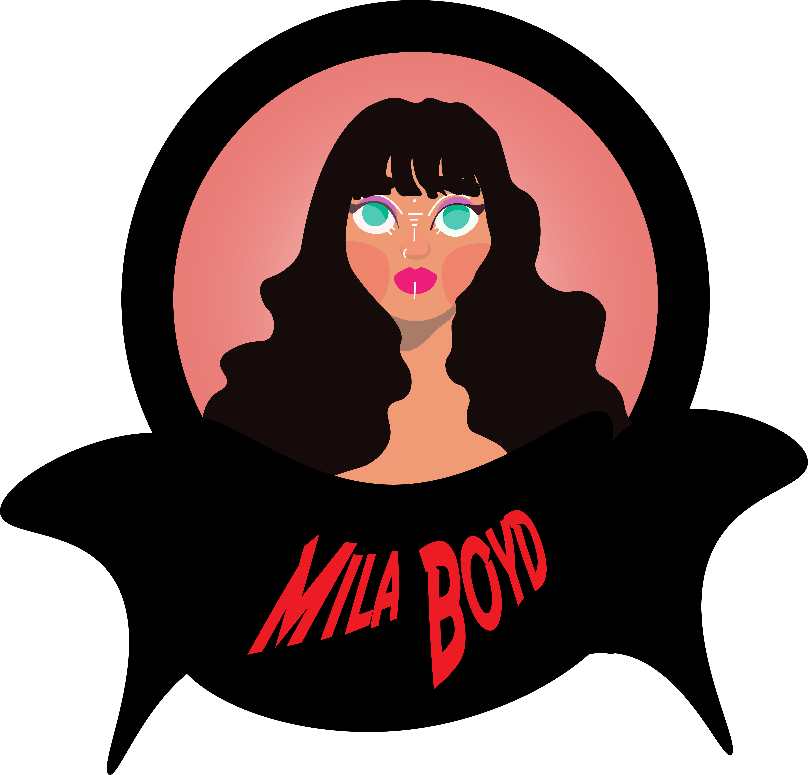

Selected Projects
Each card opens a full case study.



A collection of visual studies, identity work, and layout projects, built around typography, color, and quiet visual hierarchy.

Each card opens a full case study.
